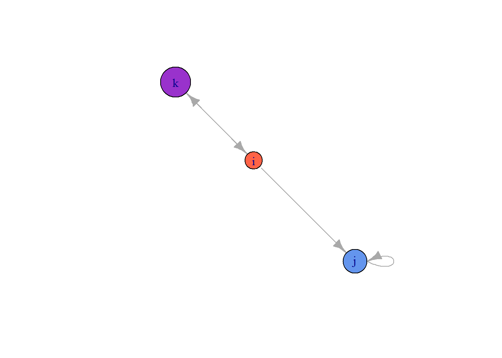
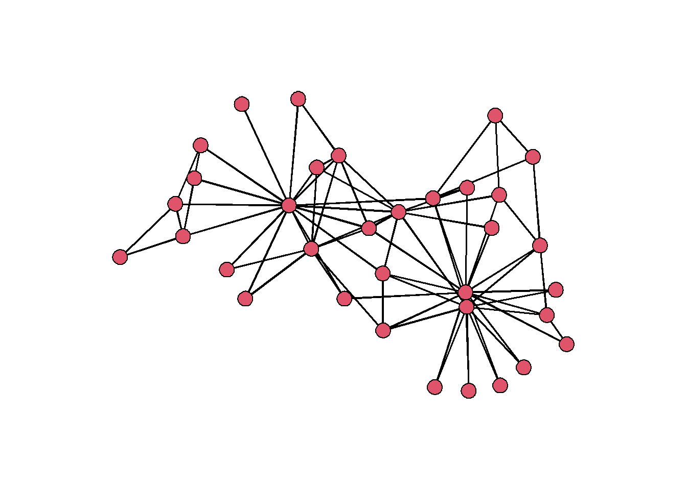

In this meeting, we cover the basics of working with networks in R. By the end of the workshop, you will be acquainted with three packages – igraph, statnet, and tidygraph – and you will be able to create a network from scratch, turn it into a network object, create vertex and edge attributes, and genereate a basic visualization. Let’s get started.
Data Structures
Before we dive into network objects, let’s understand the data structures that are used to represent relational data. We will focus on matrices and edgelists, as these are among the most common structures used for network data.
The Square Matrix
| i | j | k | |
|---|---|---|---|
| i | 0 | 0 | 0 |
| j | 0 | 0 | 0 |
| k | 0 | 0 | 0 |
One way to represent a network is using a square matrix where every node in the network has its own row and column. To do this, let’s create a vector of three nodes i, j, and k.
v <- letters[9:11]
v## [1] "i" "j" "k"Now, we can create a matrix in R using the index vector v.
M <- matrix(c(0,0,0,
0,0,0,
0,0,0),
nrow = length(v),
dimnames = list(v,v))
M## i j k
## i 0 0 0
## j 0 0 0
## k 0 0 0Every cell in the matrix M represents a relationship between the two nodes – these are the network edges. A value of 0 means that no edge is present. So in this matrix, there aren’t any edges. But let’s add an edge from i to j and from i to k.
M[1,2] <- 1
M[1,3] <- 1
M## i j k
## i 0 1 1
## j 0 0 0
## k 0 0 0This is the conventional way of representing directed edges between nodes. We can represent a reciprocal edge from k to i as well. In an undirected network, this information is redundant.
M[3,1] <- 1
M## i j k
## i 0 1 1
## j 0 0 0
## k 1 0 0Cells along the diagonal are known as loops. For example, we can an edge from j to j along the diagonal.
M[2,2] <- 1
M## i j k
## i 0 1 1
## j 0 1 0
## k 1 0 0You can always extract the diagonal using diag(). This is also a handy way to set the diagonal to 0 if your network does not contain loops.
diag(M) <- 0The Edgelist
| Sender | Receiver |
|---|---|
| i | k |
| j | j |
| k | i |
An edgelist is a more compact way to store network data. This is because it does not include the 0s in that are shown in the matrix. Instead an edgelist only contains rows for each of the edges that are present in the network. This may seem trivial for a small network of 3 nodes, but when you work with a large network with hundreds or thousands of rows, eliminating all of those zeros is very convenient.
To construct an edgelist, stack rows on top of one another using the rbind function.
E <- rbind(c('i','k'),
c('j','j'),
c('k','i'))You can think of the first column as a sender column. The second column is a receiver column. This is how directionality is represented in the edge list.
If you want to add edges to an edgelist, simply bind a new row to the current edgelist.
E <- rbind(E, c('i','j'))
E## [,1] [,2]
## [1,] "i" "k"
## [2,] "j" "j"
## [3,] "k" "i"
## [4,] "i" "j"Use the same bracket [] notation to delete rows.
E[-4,] ## [,1] [,2]
## [1,] "i" "k"
## [2,] "j" "j"
## [3,] "k" "i"But Why?
You might be wondering… why do we need to know these details about data structure? Here are two reasons.
First, whether you collect your own network data or receive data from someone else, you’ll need to store/wrangle the data into one of these formats. When you collect your own data, you can store it in this format right away. But if you receive a network you did not collect, knowing these data structures will help you understand what you are looking at.
Second, understand data structure opens the door to simulation. Put differently, you don’t need to collect data to begin learning about and visualizing networks. You can simulate synthetic data. Here is a brief example.
Bernouli Graph Simulation
In our example matrix above there were 3 nodes and a matrix with 9 possible edges. These means that for \(N\) nodes, there are \(N^2\) possible edges. We can use this information to simulate a random network.
set.seed(777)
# How many nodes?
N <- 7
# How many edges?
N_edges <- N^2
# Use binomial distribution to simulate edges (coin flip)
simM <- matrix(rbinom(N_edges,
size=1,
prob=0.5),
nrow = N)
# No loops
diag(simM) <- 0
simM## [,1] [,2] [,3] [,4] [,5] [,6] [,7]
## [1,] 0 0 1 1 1 0 1
## [2,] 0 0 0 1 1 1 0
## [3,] 0 0 0 0 1 0 0
## [4,] 1 1 1 0 1 1 1
## [5,] 1 1 0 1 0 1 1
## [6,] 0 1 0 0 0 0 1
## [7,] 0 1 0 1 0 0 0We can use a similar procedure to simulate an edgelist. We just need to create a third column to simulate the edges, then filter out the zeros.
set.seed(777)
N <- letters[1:5]
simE <- expand.grid(N,N)
simE$Edge <- rbinom(nrow(simE),
size = 1,
prob = 0.5)
simE <- simE[!simE$Edge == 0 & !simE$Var1 == simE$Var2, 1:2]
head(simE)## Var1 Var2
## 4 d a
## 5 e a
## 9 d b
## 11 a c
## 12 b c
## 14 d cNetwork objects in igraph
Now we will turn these data structures into igraph network objects. First, install and load the igraph package.
install.packages('igraph')
library(igraph)First let’s create some attributes for our 3 node network. They don’t need to be fancy; just some sizes and colors.
att <- data.frame(
name = c("i","j","k"),
size = c(20,27,34),
color = c('tomato',
'cornflowerblue',
'darkorchid')
)
att## name size color
## 1 i 20 tomato
## 2 j 27 cornflowerblue
## 3 k 34 darkorchidMatrix \(\rightarrow\) network
To create a network object using a matrix, we use the graph.adjacency function. In graph theory, relational matrices are often referred to as adjacency matrices. Use the M matrix that we created before.
gM <- graph.adjacency(M)
gM## IGRAPH 43a8562 DN-- 3 3 --
## + attr: name (v/c)
## + edges from 43a8562 (vertex names):
## [1] i->j i->k k->iWhen we call the object, we receive a summary of the network. DN means this is a directed network with 3 nodes and 3 edges. There is just one attributes, the name of the vertices. We can tell that this is a categorical vertex attribute by the notation (v/c). The edges are listen at the bottom.
Manually add vertex attributes to the network gM from out att data frame.
gM <- set_vertex_attr(gM, name = 'size', value = att$size)
gM <- set_vertex_attr(gM, name = 'color', value = att$color)
gM## IGRAPH 43a8562 DN-- 3 3 --
## + attr: name (v/c), size (v/n), color (v/c)
## + edges from 43a8562 (vertex names):
## [1] i->j i->k k->iEdgelist \(\rightarrow\) network
To create an object using an edgelist, we use the graph.data.frame function. Using edgelists is nice because you can add the vertex attribute table in directly.
gE <- graph.data.frame(E, vertices = att)
gE## IGRAPH 43b988c DN-- 3 4 --
## + attr: name (v/c), size (v/n), color (v/c)
## + edges from 43b988c (vertex names):
## [1] i->k j->j k->i i->jOnce you have an igraph network object, you can extract vertex and edge attributes.
V(gE)$color## [1] "tomato" "cornflowerblue" "darkorchid"We don’t have any edge attributes in this network, but if we did, we would use E(object)$attr syntax.
Visualize igraph objects
There are many aesthetic properties of network graph. But you can generally think of them as vertex (or node) aesthetics, edge aesthetics, and network aesthetics. To learn more about all of the ways to specify these in igraph, called ??igraph.plotting.
Let’s visualize our object gE. Here is a generic plot.
plot(gE)
By default, igraph labels each node with the $name attribute, and, if they exist, it will choose the sizes and colors using the $color and $size attributes. Since we set size and color in our att data frame, we replaced the defaults. But we can easily override them.
plot(gE,
vertex.color = '#2a00fa',
vertex.size = 30)
Let’s also change the color of the label to make it easier to read, change the edge colors to black, and make the arrow heads a bit smaller.
plot(gE,
vertex.color = '#2a00fa',
vertex.size = 30,
vertex.label.color = 'white',
edge.color = 'black',
edge.arrow.size = 0.681)
Finally, let’s set the layout to layout.circle and add some curve to the edges.
plot(gE,
vertex.color = '#2a00fa',
vertex.size = 30,
vertex.label.color = 'white',
edge.color = 'black',
edge.arrow.size = 0.681,
edge.curved = 0.1,
layout = layout.circle)
Network objects in statnet
Create network objects in statnet is pretty intuitive. First, install and load the statnet suite of packages.
install.packages('statnet', dependencies=T)
library(statnet)To create network objects, use the network function. When using an edgelist, tell the function you are using one in the matrix.type parameter.
netM <- network(M, vertex.attr = att)
netE <- network(E, vertex.attr = att,
matrix.type = "edgelist" )
netE## Network attributes:
## vertices = 3
## directed = TRUE
## hyper = FALSE
## loops = FALSE
## multiple = FALSE
## bipartite = FALSE
## total edges= 4
## missing edges= 0
## non-missing edges= 4
##
## Vertex attribute names:
## color name size vertex.names
##
## No edge attributesLike the igraph object, when we call the network object, we get a summary of some important network details.
To extract variables from the network object, we use one of three operators:
%v%– extract vertex attributes%e%– extract edge attributes%n%– extract network attributes
For example, we can see the values for color by extracting the attribute from the network by calling the network object, the appropriate operator, and the name of the attribute.
netE %v% 'color'## [1] "tomato" "cornflowerblue" "darkorchid"Visualize network objects
Rather than working with the same old triadic network as we did before, let’s load a network from the ergm.count library that is part if statnet.
data(zach)This is a network known as Zachary’s karate club. Here is the description from the package:
Zachary (1977) reported observations of social relations in a university karate club, with membership that varied between 50 and 100, of whom 34 individuals: 32 ordinary club members and officers, the club president (“John A.”), and the part-time instructor (“Mr. Hi”); consistently interacted outside of the club. Over the course of the study, the club divided into two factions, and, ultimately, split into two clubs, one led by Hi and the other by John and the original club’s officers. The split was driven by a disagreement over whether Hi could unilaterally change the level of compensation for his services.
Call the zach object and see the description.
zach## Network attributes:
## vertices = 34
## directed = FALSE
## hyper = FALSE
## loops = FALSE
## multiple = FALSE
## bipartite = FALSE
## total edges= 78
## missing edges= 0
## non-missing edges= 78
##
## Vertex attribute names:
## club faction faction.id role vertex.names
##
## Edge attribute names:
## contextsGenerate a generic plot of zach using the gplot function specific to the sna package.
par(mar=c(0,0,0,0)) # make margins smaller
gplot(zach, usearrows = F)
There are appear to be some individuals who have many more connections than any of the others. Let’s add an attribute to each node that shows the count of their connections. This is called degree centrality, and we can calculate it using the function degree.
# set gmode to 'graph' for undirected graphs
set.vertex.attribute(zach,
attrname = 'degree',
value = degree(zach, gmode = 'graph'))Now we have a vertex attribute that we can use to rescale the size of each node.
References
Zachary, WW (1977). An Information Flow Model for Conflict and Fission in Small Groups. Journal of Anthropological Research, 33(4), 452-473.